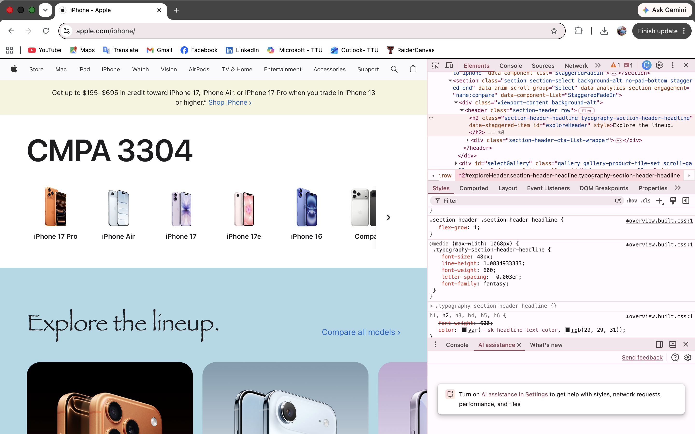

Dev Tools Vandalism
I used the chrome browser developer tools to temporarily "vandalize" the apple.com website. Below is a screenshot showing my changes with the developer tools included. These edits only appeared on my computer and did not affect the actual website.

What I "Vandalized"
The changes I made to the website using chrome's developer tools include:
I edited the main heading by changing "iPhone" to "CMPA 3304." I also changed the background colors of two different sections to light blue and cream, and I changed the font of the "Explore the lineup" heading to the fantasy font.
The CSS properties I modified were background-color and font-family. It was interesting to see how quickly the website changed just by editing a few CSS properties. Changing the heading to "CMPA 3304" was also fun because it made the page look like it was promoting our class instead of a phone.
Some changes worked right away, while others didn't because the page had multiple layers and styles that overrode the changes. After trying different elements, I was able to find the correct ones to edit. I chose these changes because they were easy to notice and helped me understand how HTML elements and CSS styles work together. This activity gave me a much better understanding of how Developer Tools can be used to test changes, troubleshoot layouts, and experiment with designs before making permanent edits to a webpage.